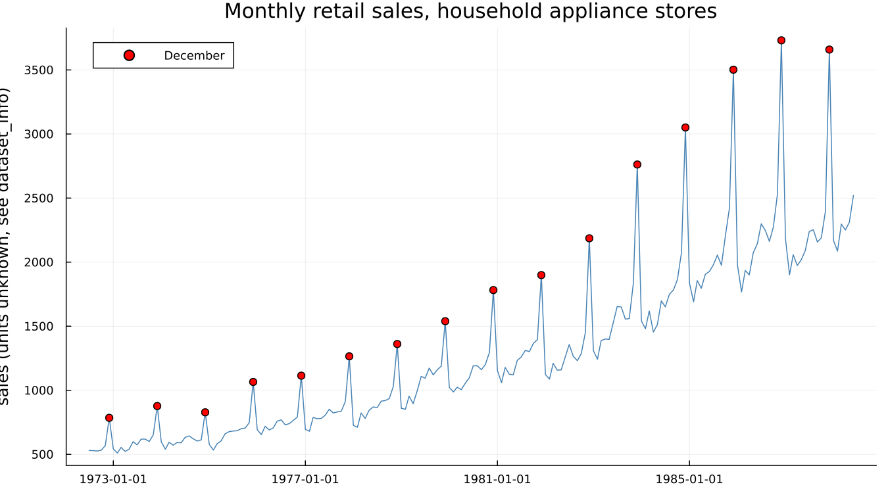

1. Why Adjust?
1.1 A number that changes every month
Retail sales at household appliance stores rose 52% from November to December, on average, across sixteen years of Census Bureau data:

Is that good news? No — December is always like this. Every red dot in the figure above is a December, and every one of them sits near the top of that year's swing. A raw month-over-month comparison here answers a question nobody was actually asking. The real question — is the underlying level of business improving or declining — is invisible in this chart until the seasonal pattern is removed from it.
1.2 Why not just compare with last year?
The obvious workaround, and the one most people reach for without being taught to, is year-over-year comparison: this December against last December, this March against last March. It deserves a fair hearing, because it does solve the immediate problem — comparing like with like, calendar position for calendar position.
It also costs more than it first appears to:
- It discards eleven months of information to produce one comparison, every time.
- It is contaminated by whatever happened in the same month last year. One unusual November — a storm, a one-off promotion, a data error — pollutes twelve subsequent year-over-year comparisons, once for every month that gets compared back against it.
- It cannot detect a turning point until up to a year after it happens. This is the decisive argument, and it is underused. A series that genuinely turns downward in March keeps showing positive year-over-year growth for months afterward, for the simple reason that it is still being compared against a base month from before the turn. By the time the year-over-year comparison catches up, a year has already been lost.
Seasonal adjustment exists so that adjacent months can be compared directly — this month against last month, without a twelve-month wait and without discarding eleven-twelfths of the data to get there. That is the whole value proposition, and it is worth stating this plainly, because it is rarer to see stated plainly than it should be.
1.3 The calendar is not only seasons
"Seasonal" suggests weather and holidays, and those are part of it, but the calendar creates other effects with nothing to do with the season at all. A month's trading-day composition — how many Mondays it has, how many weekends — varies from year to year at a fixed calendar position, and a retail series feels every extra Saturday. Part III covers this family of effects (Chapters 10–12) in full.
The cleanest example of a calendar effect no fixed monthly factor can absorb is a moving holiday — one whose date shifts across the calendar from year to year. Diwali, observed widely across India, falls in October in some years and November in others, and whichever effect it has on a retail or travel series moves with it. A seasonal factor fixed to "October" or "November" cannot follow a holiday that does not stay in either month. Chapter 11 builds the regressor this actually needs, using custom_holiday_regressor.
1.4 What adjustment is not
Half a page of negative space, because it prevents a lot of confusion later. Seasonal adjustment is:
- not forecasting — it describes the past and present, and says nothing about the future on its own (Chapter 13 covers forecasting as its own, separate capability, built on top of an adjustment);
- not smoothing for its own sake — the trend-cycle component (Chapter
- is smooth, but the adjusted series itself still carries the
- not detrending — the trend stays in an adjusted series; only the seasonal (and, depending on spec, calendar) component is removed;
- not a way to make a series look nicer.
It removes one specific, repeating, calendar-linked component and leaves everything else — including the noise — exactly alone.
See also: Chapter 2 for what "trend," "seasonal" and "irregular" mean precisely, and why splitting a series into them is not as settled a question as it might sound. Chapter 11 for the Diwali regressor this chapter's calendar-effect example builds toward.